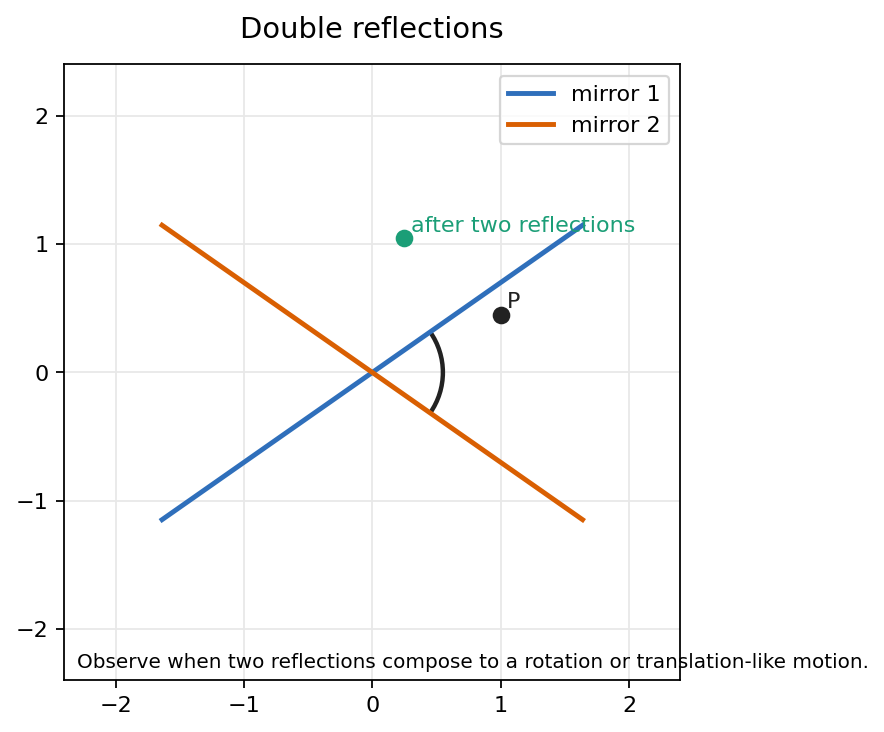
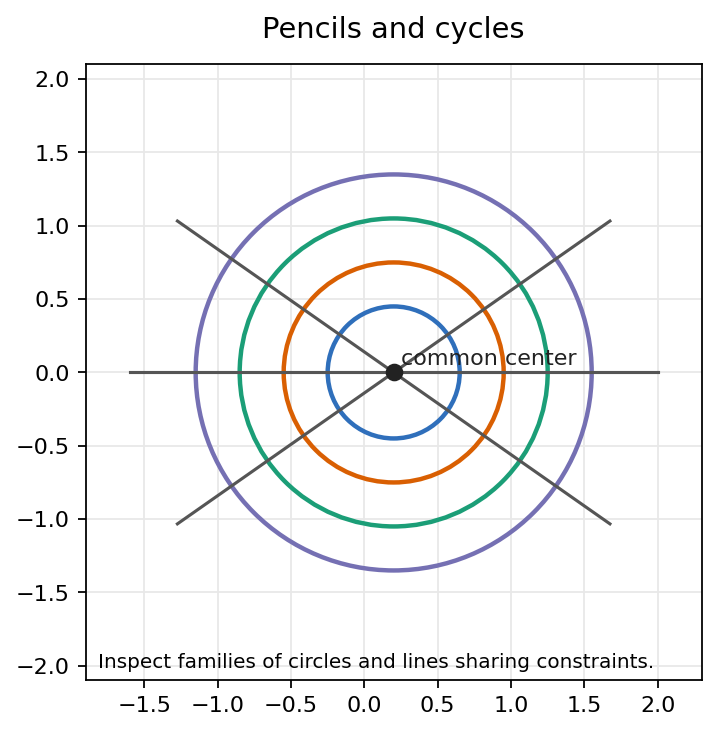
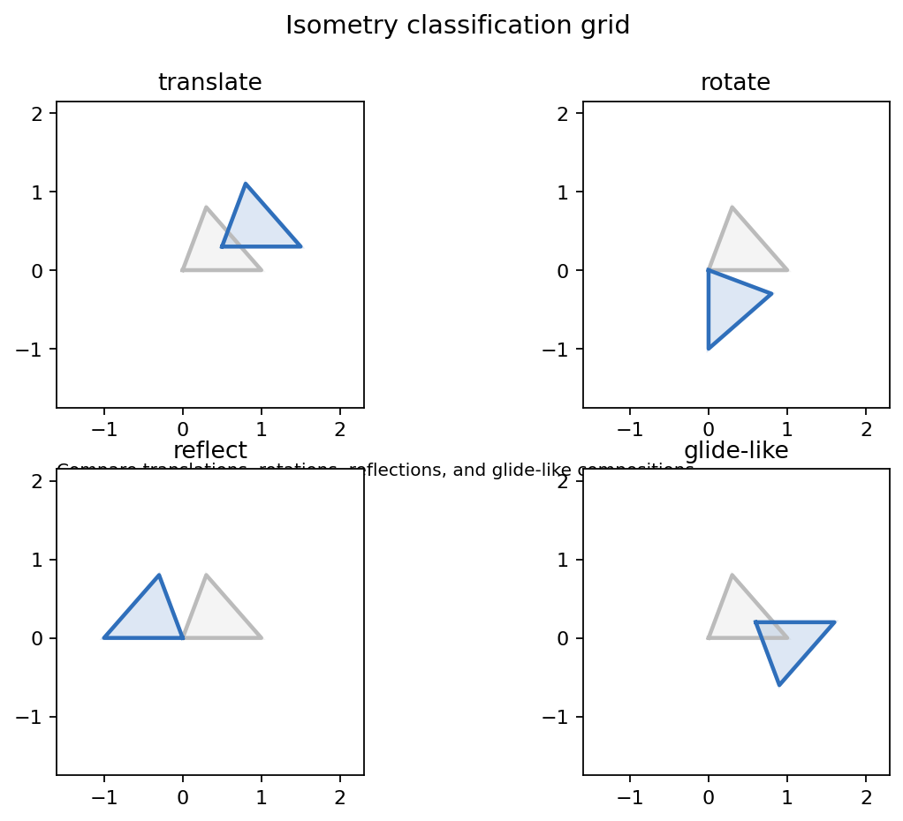
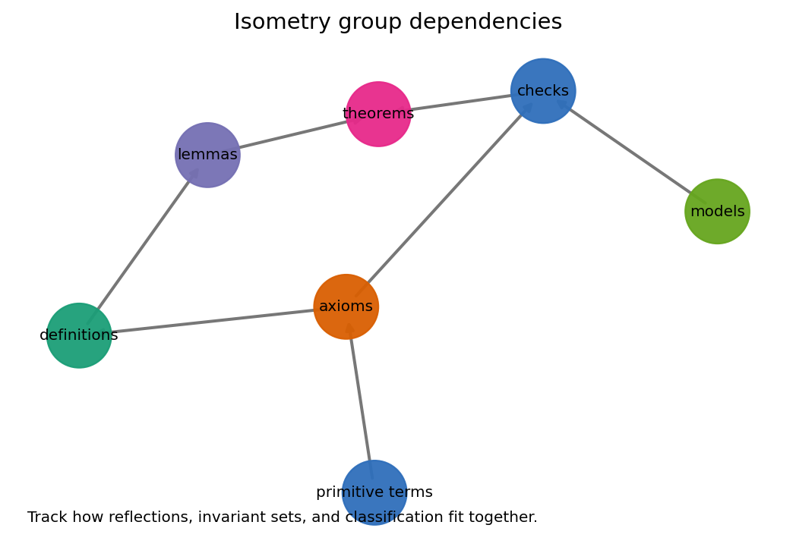

How transformations classify a geometry by what they preserve: incidence, distance, fixed sets, model structure, and group composition.
Turn a proposed transformation into a short list of invariant tests, then use those tests to name the motion.
A model is understood through the maps that leave its chosen geometry unchanged.
Source span: printed pages 285-358; PDF pages 300-373. Notebook: chapter-11-the-theory-of-isometries/11-the-theory-of-isometries.ipynb
A collineation preserves lines and incidence. An isometry preserves the metric, and therefore carries congruent configurations to congruent configurations.
A disk picture is not the geometry by itself. The geometry is the disk together with the designated lines, metric, and admissible transformations.
If a visual distance looks shorter near the boundary, ask which metric is being measured before drawing a conclusion.
A reflection fixes a line pointwise and sends every other point to the opposite side at the same perpendicular distance from the mirror.
Once reflections are available, many isometries are built by composing mirrors. Classification becomes a question about mirror geometry.

Reflect across \(m_1\), then across \(m_2\). The relative position of the mirrors determines the resulting isometry.
| Mirror relation | Motion produced | Invariant cue |
|---|---|---|
| Same mirror | identity | every point returns |
| Intersecting mirrors | rotation | intersection point fixed |
| Parallel mirrors | translation-like motion | no ordinary fixed point |

A pencil is a family organized by a common condition. A cycle is a generalized circle or line used as an invariant object under transformations.
Classification becomes less point-by-point when whole families of cycles reveal what a transformation preserves.

| Question | What it separates |
|---|---|
| Does distance survive? | isometries from merely visual maps |
| Is orientation preserved? | direct motions from reflections and glides |
| Are there fixed points? | rotations/reflections from translations or glides |
| Which invariant family is carried along? | cycle and pencil behavior |
The drawing may suggest a motion name, but the proof needs an invariant test that works for every point in the model.
In the Euclidean plane, a motion can be tested in the form \(F(x)=Ax+b\).
| Algebraic check | Geometric meaning |
|---|---|
| \(A^T A=I\) | lengths and angles are preserved |
| \(\det A=1\) | orientation is preserved |
| \(\det A=-1\) | orientation is reversed |
| \((A-I)x=-b\) | fixed points solve a linear system |
Fractional linear maps provide a compact algebraic language for many disk transformations.

The isometries of a model form a group: identity, closure under composition, inverses, and associativity inherited from functions.
A straight-looking curve in a drawing may not be a model line, and a curved-looking one may be the correct line.
Preserving a sample triangle is not enough. An isometry statement quantifies over all point pairs in the model.
Reflecting in \(m_1\) and then \(m_2\) need not equal reflecting in \(m_2\) and then \(m_1\).
State the active model, write the preservation equation, then identify fixed objects and invariant families.
If a transformation is hard to name, ask what happens to a line, a circle, a pair of distances, and an orientation marker.
A classification theorem needs both existence and uniqueness: every allowed motion appears, and no two names overlap improperly.
For each map, give one distance check, one orientation or determinant check, and one fixed-set statement.